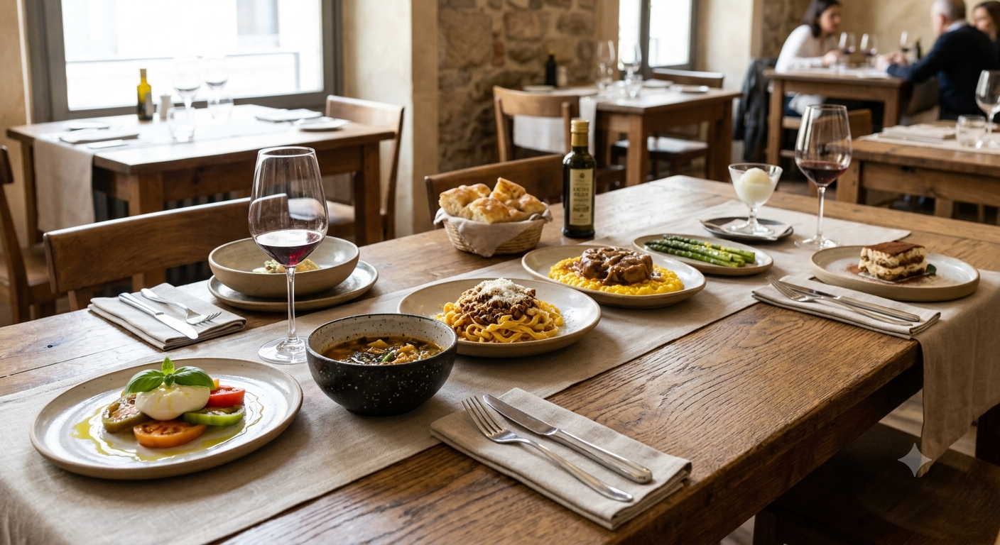
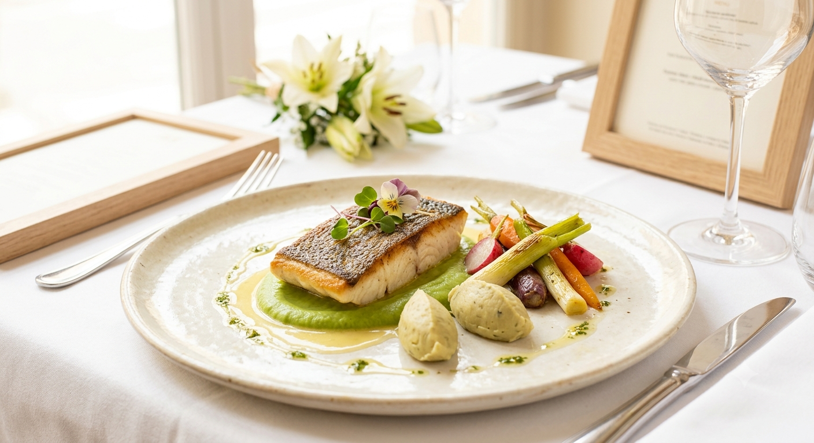
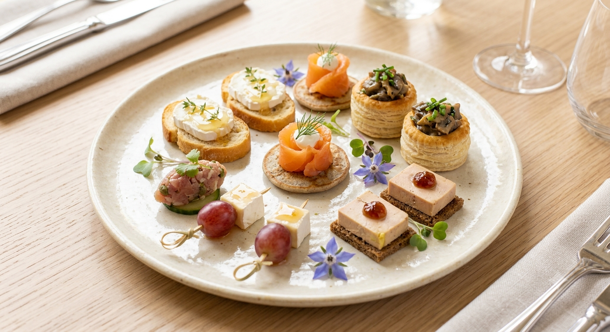
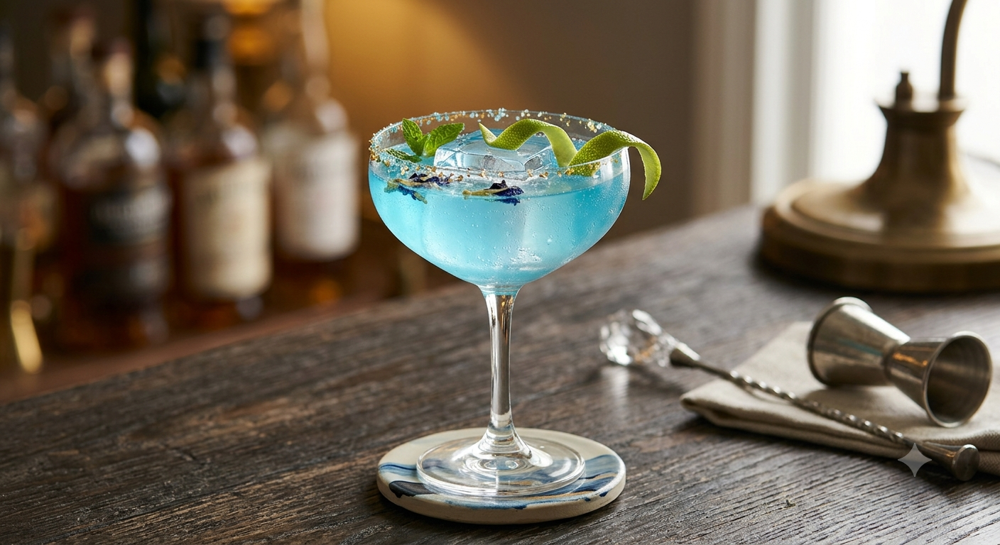
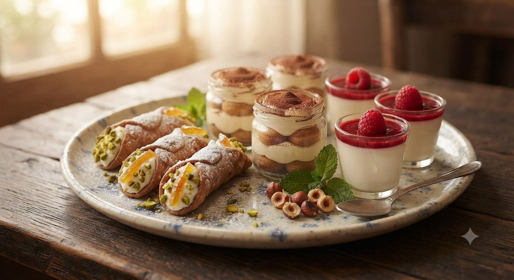
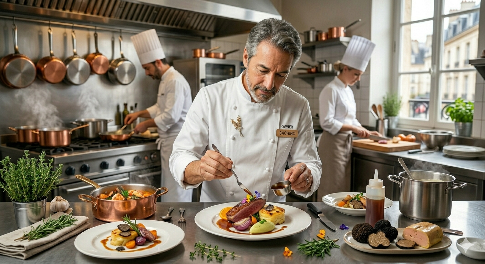

Special Feature / Gastronomy
和の情景と、
イタリアの鼓動。
PROLOGUE
扉を開けると、そこにはかつて寿司店として愛された板場の趣が静かに息づいている。 北海道の厳しい冬を越え、芽吹く春の力。その熾鮮烈な味を、店主・丹後公章はイタリアンの技法で解釈し直す。
それは単なるフュージョンではない。鮮魚や味噌といった日本の調味料を隠し味に、 白身魚の繊細な旨味を最大限に引き出す「モダンイタリアン」の極致だ。

Fig. 101: 十勝ロイヤルマンガリッツァの火入れ
The Gastronomy
その日、その時、もっとも美しい食材を。
「おまかせコース」は、
アミューズからドルチェまで、一篇の詩を読み進めるような高揚感に満ちている。



Pairing by Senior Sommelière
REVIEWS
「料理のバリエーションも斬新も絶妙で、箸が飽きることなく時間が過ぎていく。プロでなければできないペアリングの提案も、この店の魅力だ。」
「落ち着いた雪囲気。味噌麹と山わさびのソースがカンパチにピッタリで驚いた。特別な日のディナーにふさわしい素敵なお店です。」

THE DUO
札幌の名店「カノフィーロ」や市内のフレンチレストランで21年の研鑽を積んだ店主。 その隣には、シニアソムリエとしてワインとのマリアージュを紡績する妻・美幸。
二人の調和が、この隠れ家を「botanで外せない一軒」へと押し上げている。 店名の「botan」に込めたのは、美しく、かつ親しみやすいもてなしの願い。
料理屋 botan がお贈りする、新しい食の体験。
01 / WORKSHOP & DINING
botanの味の根幹をなす「自家醸魚醤」や「手仕込み味噌」。店主・丹後が手塩にかけて育てる発酵調味料の作り方をまなぶ小さなワークショップ。体験後は、その調味料で極立てられたこの日限りの特別コースをソムリエ厳選のペアリングと共にお召し上がりいただきます。
02 / PAIRING SALON
出汁や麹の旨味とワインの酸味が重なり合う瞬間を試食しながら紐解く、大人のためのサロン形式イベント。ご家庭の食卓にも活かせるペアリングの秘訣をお伝えします。
※ 開催時期および募集案内は公式SNS・HITOSARAにて告知予定です。
LOCATION
Address
〒064-0807
北海道札幌市中央区南7条西3丁目7-29
アポロビル 2F
Contact
Tel: 090-7654-1474
※接客中はお電話に出られない場合がございます。
Stations
Ryoriya Botan Location Map / Central Sapporo